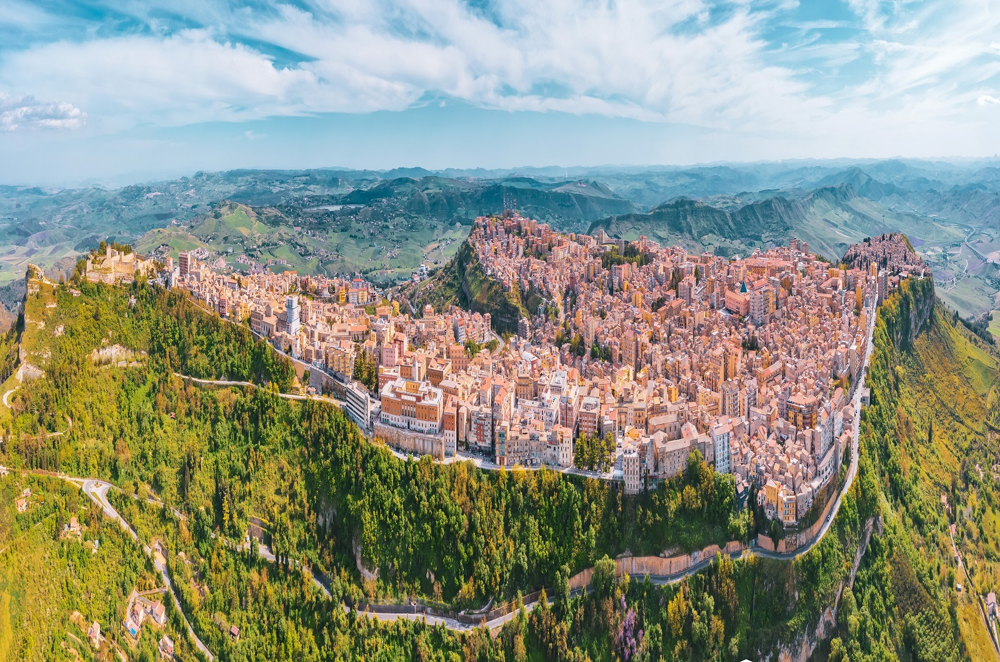

Enna
Se le piazze costiere vivono del rapporto con l'acqua, Piazza Vittorio Emanuele a Enna vive del suo rapporto con il cielo e l'infinito. Essendo Enna il capoluogo più alto d'Italia, la sua piazza principale non è solo un centro urbano, ma una vera e propria terrazza sospesa sulle nuvole. L'architettura della piazza è caratterizzata dalla sua apertura. Nonostante sia circondata da edifici storici, la sensazione prevalente è quella di una grande balconata. Da qui lo sguardo corre lungo le valli del centro Sicilia, arrivando a scorgere, nelle giornate limpide, la sagoma imponente dell'Etna verso est e le colline del Nisseno verso sud. È uno dei pochi luoghi dove si percepisce fisicamente di essere nel "cuore" geografico dell'isola.

L'elemento scultoreo centrale, che aggiunge un tocco di dinamismo barocco allo spazio, è la Fontana del Ratto di Proserpina. La fontana è una copia del celebre capolavoro del Bernini. La scelta non è casuale: il mito di Proserpina (Persefone) è indissolubilmente legato al territorio ennese e al vicino Lago di Pergusa. Uno dei lati della piazza è nobilitato dalla facciata della Chiesa di San Francesco d’Assisi, annessa al convento dei Frati Minori. Con il suo imponente campanile a torre, la chiesa funge da contrappeso architettonico alla vastità della piazza, ancorando lo spazio pubblico alla tradizione religiosa e storica della città.
Enna è una città che vive di nebbia e di silenzi. D'inverno, le nuvole spesso avvolgono il centro storico come un mantello, isolandolo dal resto dell'isola. In quei momenti, camminare per le sue strade strette e lastricate di pietra, con la nebbia che attenua i contorni degli edifici e ovatta ogni rumore, è come varcare una soglia verso un tempo sospeso. La piazza diventa allora un'oasi metafisica e silenziosa